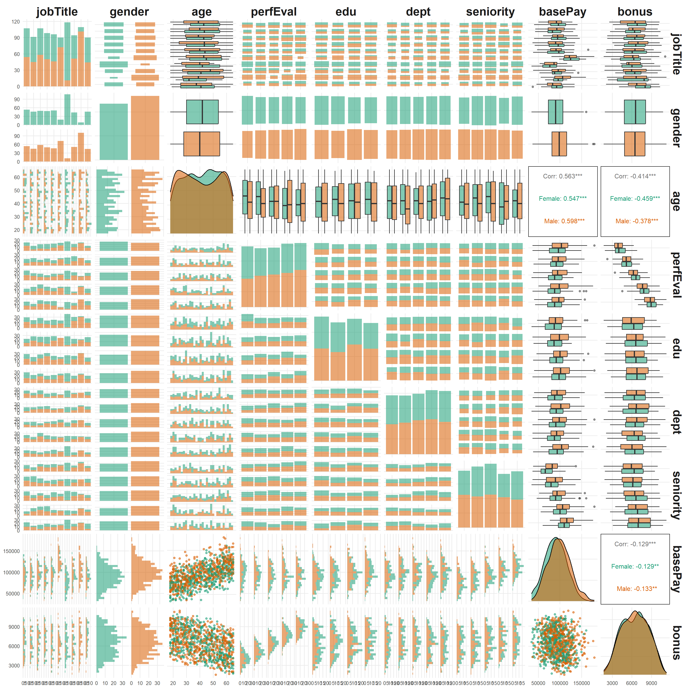
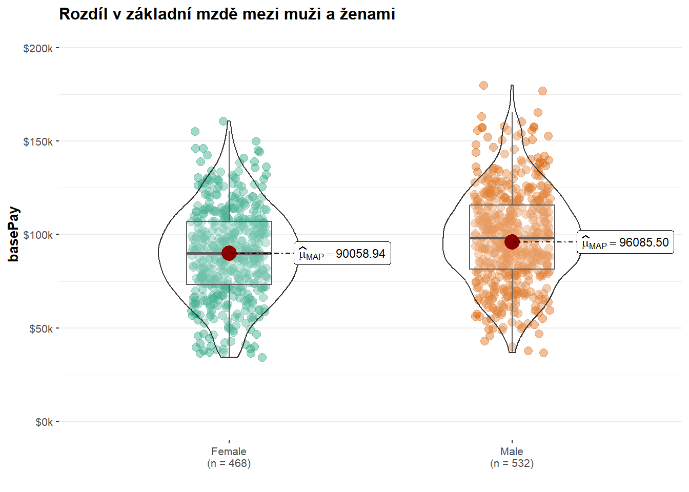
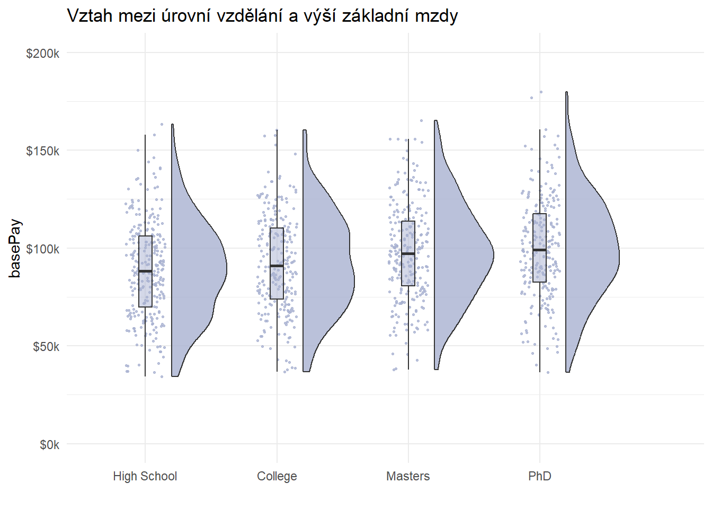
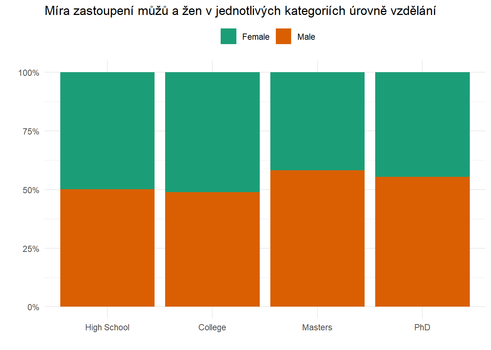
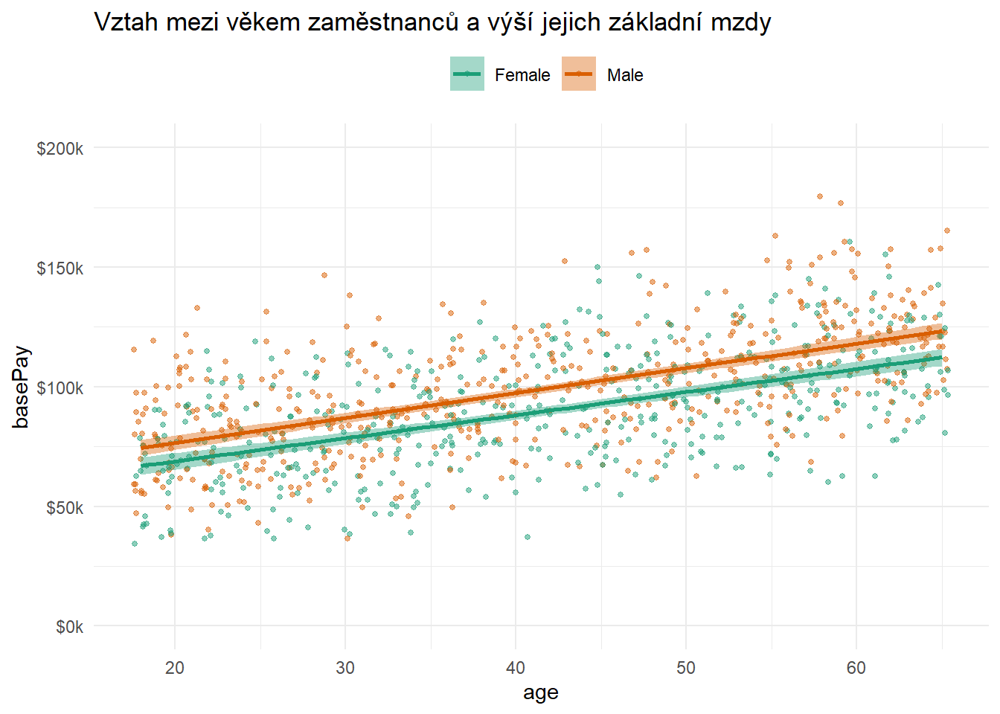
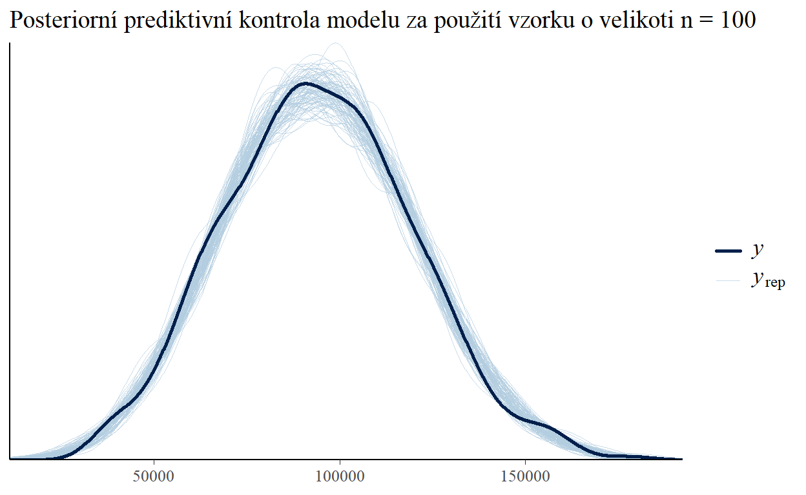
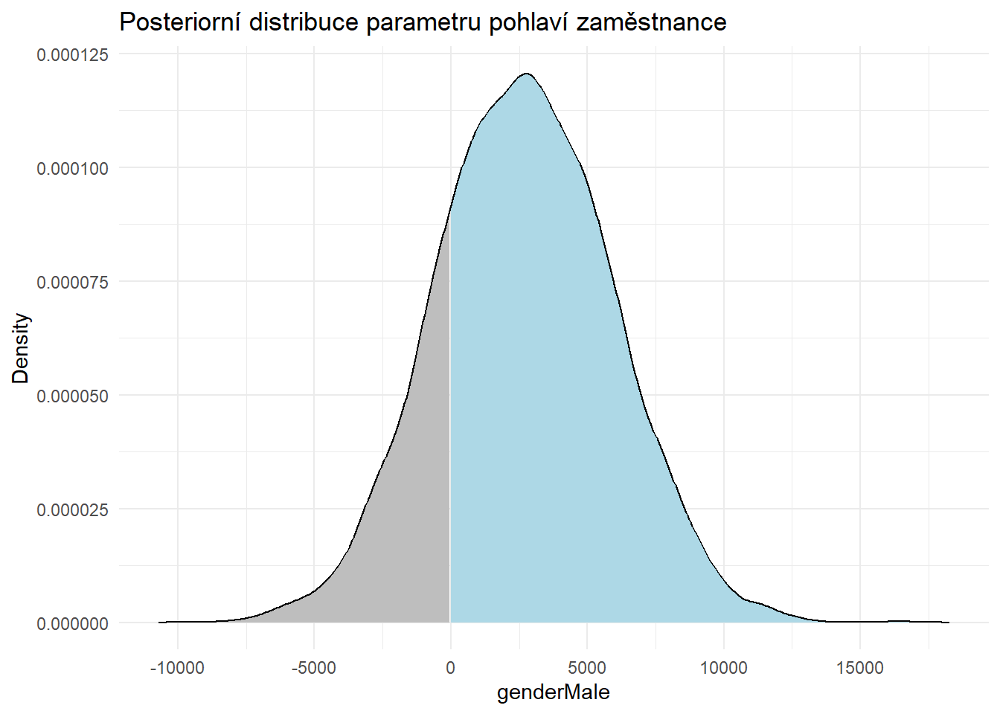
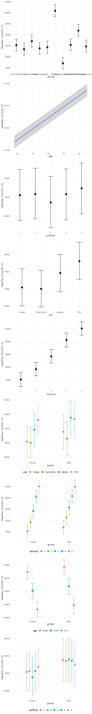

Co to je gender pay gap a jak ho měřit?
Gender pay gap (GPG), v překladu genderová příjmová nerovnost nebo příjmová propast mezi muži a ženami, označuje typický rozdíl mezi platovým ohodnocením pracujících žen a mužů. Obvykle je GPG vyjadřována procenty, poměrem typické hrubé hodinové (či roční) mzdy ženy k typické mzdě muže nebo poměrem rozdílu mezi typickou mzdou mužů a žen vůči typické mzdě mužů.
Bez ohledu na způsob měření GPG, je dobře doloženým faktem, že ženy jsou obecně hůře placeny než muži, jakkoli se tento rozdíl postupem času zmenšuje. Rozdíly v platech se přitom mohou v jednotlivých zemích poměrně dost lišit. Názorně to ilustruje níže uvedený graf, který ukazuje vývoj (neadjustované) GPG (definované jako poměr rozdílu mediánové mzdy zaměstnaných mužů a žen a mediánové mzdy zaměstnaných mužů) v průběhu několika minulých let v zemích OECD.
Show code
# Keep all available years, including 2016.
gpgoecd <- readr::read_csv("./DP_LIVE_29012021212234147.csv", show_col_types = FALSE)
gpg_years <- sort(unique(gpgoecd$TIME))
country_names <- c(
AUS = "Austrálie", AUT = "Rakousko", BEL = "Belgie", CAN = "Kanada",
CHE = "Švýcarsko", CHL = "Chile", COL = "Kolumbie", CRI = "Kostarika",
CZE = "Česko", DEU = "Německo", DNK = "Dánsko", FIN = "Finsko",
FRA = "Francie", GBR = "Spojené království", GRC = "Řecko", HUN = "Maďarsko",
ISL = "Island", ISR = "Izrael", ITA = "Itálie", JPN = "Japonsko",
KOR = "Jižní Korea", MEX = "Mexiko", NOR = "Norsko", NZL = "Nový Zéland",
OECD = "OECD", POL = "Polsko", PRT = "Portugalsko", SVK = "Slovensko",
SWE = "Švédsko", USA = "Spojené státy"
)
gpg_plot_data <- gpgoecd %>%
dplyr::filter(is.finite(Value))
# Read panels from left to right, starting with the highest latest value.
gpg_latest <- gpg_plot_data %>%
dplyr::group_by(LOCATION) %>%
dplyr::slice_max(TIME, n = 1, with_ties = FALSE) %>%
dplyr::ungroup() %>%
dplyr::arrange(dplyr::desc(Value), LOCATION)
gpg_country_order <- unname(country_names[gpg_latest$LOCATION])
gpg_plot_data <- gpg_plot_data %>%
dplyr::mutate(
country = factor(unname(country_names[LOCATION]), levels = gpg_country_order),
series = if_else(LOCATION == "CZE", "Česko", "Ostatní"),
hover = paste0(
"Země: ", country, "<br>Rok: ", TIME, "<br>GPG: ",
scales::number(Value, accuracy = 0.1, decimal.mark = ","), " %"
)
) %>%
dplyr::arrange(LOCATION, TIME)
# Explicit NAs break lines at missing years; no values are interpolated.
gpg_line_data <- gpg_plot_data %>%
dplyr::select(LOCATION, TIME, Value) %>%
dplyr::group_by(LOCATION) %>%
tidyr::complete(TIME = gpg_years) %>%
dplyr::filter(sum(!is.na(Value)) > 1) %>%
dplyr::ungroup() %>%
dplyr::mutate(
country = factor(unname(country_names[LOCATION]), levels = gpg_country_order),
series = if_else(LOCATION == "CZE", "Česko", "Ostatní")
)
# Small multiples give every country the same time axis and percentage scale.
g <- ggplot2::ggplot(gpg_plot_data, aes(x = TIME, y = Value, colour = series)) +
ggplot2::geom_line(
data = gpg_line_data, aes(group = LOCATION), linewidth = 0.75, na.rm = TRUE
) +
ggplot2::geom_point(aes(text = hover), size = 2) +
# Separate x axes repeat year labels; the explicit limits below stay identical.
ggplot2::facet_wrap(~ country, ncol = 5, scales = "free_x") +
ggplot2::scale_colour_manual(
values = c("Ostatní" = "#326781", "Česko" = "#B96236"), guide = "none"
) +
ggplot2::scale_y_continuous(
limits = c(0, 40), breaks = c(0, 20, 40),
labels = scales::label_number(suffix = " %", decimal.mark = ","),
expand = expansion(add = 2)
) +
ggplot2::scale_x_continuous(
breaks = gpg_years, limits = range(gpg_years),
expand = expansion(add = 0.25)
) +
ggplot2::labs(
x = NULL, y = "Gender pay gap (GPG)",
title = "Genderová příjmová nerovnost v zemích OECD",
subtitle = paste0(min(gpg_years), "–", max(gpg_years),
" · Stejná stupnice pro všechny země · Česko zvýrazněno"),
caption = paste0(
"Zdroj: OECD · Panely seřazeny podle poslední dostupné hodnoty.\n",
"Chybějící roky zůstávají prázdné; jediný dostupný údaj je zobrazen jako bod."
)
) +
ggplot2::theme_minimal(base_size = 11) +
ggplot2::theme(
legend.position = "none",
panel.grid.minor = element_blank(),
panel.grid.major.x = element_blank(),
panel.grid.major.y = element_line(colour = "#E5E9EC", linewidth = 0.35),
panel.spacing = grid::unit(1.1, "lines"),
strip.text = element_text(face = "bold", colour = "#374151", hjust = 0, size = 10),
axis.text = element_text(colour = "#59636E", size = 8),
axis.title.y = element_text(margin = margin(r = 10)),
plot.title = element_text(face = "bold", size = 15),
plot.subtitle = element_text(colour = "#59636E", margin = margin(b = 12)),
plot.caption = element_text(hjust = 0, colour = "#59636E", margin = margin(t = 14)),
plot.title.position = "plot", plot.caption.position = "plot"
)
# Plotly appends the source note to its existing panel labels.
gpg_widget <- plotly::ggplotly(
g,
width = 900,
height = 1100,
tooltip = "text"
)
gpg_widget %>%
plotly::layout(
title = list(
text = paste0(g$labels$title, "<br><sup>", g$labels$subtitle, "</sup>"),
x = 0, xanchor = "left"
),
margin = list(l = 65, r = 20, t = 105, b = 90),
hovermode = "closest",
annotations = list(list(
text = gsub("\n", "<br>", g$labels$caption, fixed = TRUE),
x = 0, y = -0.065, xref = "paper", yref = "paper",
xanchor = "left", yanchor = "top", align = "left", showarrow = FALSE,
font = list(size = 11, color = "#59636E")
))
)Důvodů pro nevyváženost příjmů žen a mužů pravděpodobně existuje větší množství. Mezi nejčastěji uváděné důvody patří:
- Diskriminace na pracovišti. Stejné práce je odměňována rozdílně čistě na základě pohlaví pracovníka.
- Genderové stereotypy. Předsudky ohledně výkonnosti, schopností a vlastností žen mají za následek oslabení jejich pozic a vytváření tzv. „skleněného stropu“, tj. neviditelné bariéry, na kterou ženy naráží při snaze o kariérní postup na lépe placené pozice.
- Segregace trhu. Odvětví, v nichž je tradičně zaměstnáváno více žen než mužů jako je zdravotnictví, školství nebo veřejná správa, jsou společností vnímána jako méně prestižní, a tedy i hůře odměňována.
- Rodinný život. Ženy většinou nesou větší část zátěže spojené s rodinným životem (např. při odchodu na mateřskou dovolenou, při péči o nemocné děti či jiné členy domácnosti), což jim významně stěžuje jejich snahu o kariérní růst.
V situaci, kdy při reportování GPG nerozlišujeme mezi různými důvody pro platovou nerovnost, hovoříme o tzv. neadjustované GPG. Pro potřeby firemního auditu platové nerovnosti je však důležité zjistit rovněž tzv. adjustovanou GPG, která se snaží vyjádřit míru platové nerovnosti, která je způsobena čistě pohlavím zaměstnance. Zatímco adjustovaná GPG umožňuje firmě identifikovat možnou diskriminaci na pracovišti, neadjustovaná GPG (při neprokázané adjustované GPG) může poukazovat na existenci problémů jako jsou genderové stereotypy či nedostatečná podpora žen při snaze skloubit svůj osobní a profesní život. Pro firmy je tak užitečné sledovat oba ukazatele.
Proč se zabývat platovou nerovností ve Vaší firmě?
I kdybychom odhlédli od etických či právních aspektů platové nerovnosti mezi muži a ženami, je ve velice pragmatickém zájmu každé firmy, aby se tento druh nespravedlnosti v jejím systému odměňování nevyskytoval. V době sociálních sítí a platforem na hodnocení firem jejich současnými i bývalými zaměstnanci (za všechny zmiňme např. Glassdoor nebo český Atmoskop) se totiž informace o nerovném přístupu může velice snadno rozšířit mezi potenciální i stávající zaměstnance, kteří ji mohou zohlednit při svém rozhodování, zda se v dané firmě ucházet o práci, resp. zda v ní i nadále zůstat.
Tuto skutečnost dokládají např. výsledky průzkumu provedeného společností Glassdoor, podle kterého cca 67 % (U.S.) zaměstnanců by se neucházelo o práci tam, kde by si myslelo, že muži a ženy mají nerovné platové podmínky.
Audit platové nerovnosti mezi muži a ženami
Stejně jako při řešení jakéhokoli jiného problému, i v tomto případě platí, že v první řadě je především potřeba ověřit, že nějaký problém k řešení vůbec existuje. K tomu poslouží firemní audit platové nerovnosti mezi muži a ženami. Ten prostřednictvím analýzy platových, demografických a organizačních dat ověří, zda máme nějaké doklady pro to, že v dané společnosti existují platové rozdíly mezi zaměstnanci spojené s jejich pohlavím. Teprve na základě výsledků takové analýzy je možné se začít poohlížet po možných opatřeních v oblastech náboru, odměňování a/nebo povyšování, která by mohla pomoct nespravedlivé platové nerovnosti odstranit nebo alespoň zmírnit.
Níže uvedený příklad takového auditu vychází z článku How to Analyze Your Gender Pay Gap: An Employer’s Guide od Andrew Chamberlaina, Ph.D., hlavního ekonoma a vedoucího výzkumu ve společnosti Glassdoor.
Plán analýzy
Analýzu platové nerovnosti mezi muži a ženami provedeme v následujících několika krocích:
- Načteme si data, která obsahují informace o platech vzorku zaměstnanců, jejich pohlaví, demografických a organizačních charakteristikách, na kterých budeme testovat naše hypotézy. Za tímto účelem použijeme ilustrační data poskytnutá společností Glassdoor.
- V případě potřeby si upravíme data tak, aby lépe vyhovovala potřebám naší analýzy.
- Provedeme explorační analýzu, která nám poskytne základní představu o našich datech.
- Spočítáme si neadjustovanou GPG.
- S pomocí hierarchické regresní analýzy vytvoříme statistický model GPG, který nám umožní lépe rozlišit “vliv” různých faktorů, včetně jejich interakcí, na pozorované rozdíly v platech mužů a žen.
- Ověříme, zda samotné pohlaví zaměstance - při zohlednění “vlivu” ostatních faktorů, ke kterým máme k dispozici nějaká data - hraje nějakou významnější roli ve výši platu, který zaměstnanec dostává.
- Ověříme, zda pohlaví zaměstnance neinteraguje s některými dalšími faktory při predikci výše jejich mzdy.
Dostupná data
Show code
data <- readr::read_csv("./GenderPay_Data.csv")K dispozici máme následující data ke vzorku 1 000 zaměstnanců:
- Typ pozice, na které zaměstnanec pracuje (jobTitle)
- Pohlaví zaměstnance (gender)
- Věk zaměstnance (age)
- Hodnocení pracovního výkonu zaměstnance (perfEval)
- Úroveň vzdělání zaměstnance (edu)
- Oddělení, ve kterém zaměstnanec pracuje (dpt)
- Míra seniority zaměstnance (seniority)
- Základní mzda zaměstnance (basePay)
- Bonusová složka platu zaměstnance (bonus)
Příprava dat k analýze
Ze zběžné kontroly povahy našich dat je patrné, že ne každá z proměnných je v našem datasetu reprezentována pomocí adekvátního datového typu. Před samotnou analýzou si tedy budeme muset naše data ještě trochu upravit.
Show code
dplyr::glimpse(data)Rows: 1,000
Columns: 9
$ jobTitle <chr> "Graphic Designer", "Software Engineer", "Warehous…
$ gender <chr> "Female", "Male", "Female", "Male", "Male", "Femal…
$ age <dbl> 18, 21, 19, 20, 26, 20, 20, 18, 33, 35, 24, 18, 19…
$ perfEval <dbl> 5, 5, 4, 5, 5, 5, 5, 4, 5, 5, 5, 5, 5, 5, 5, 5, 5,…
$ edu <chr> "College", "College", "PhD", "Masters", "Masters",…
$ dept <chr> "Operations", "Management", "Administration", "Sal…
$ seniority <dbl> 2, 5, 5, 4, 5, 4, 4, 5, 5, 5, 5, 3, 3, 5, 4, 3, 5,…
$ basePay <dbl> 42363, 108476, 90208, 108080, 99464, 70890, 67585,…
$ bonus <dbl> 9938, 11128, 9268, 10154, 9319, 10126, 10541, 1024…Konkrétně budeme chtít upravit všechny textové proměnné (pracovní pozice, pohlaví, úroveň vzdělání a pracovní oddělení) a dvě numerické proměnné (hodnocení pracovního výkonu a míru seniority) na faktorové proměnné. Ke třem z těchto nově vytvořených faktorových proměnných (úroveň vzdělání, hodnocení pracovního výkonu a míra senirotity) je potom potřeba přidat informaci o správném pořadí jejich jednotlivých kategorií, protože reprezentují ordinální proměnné, u kterých lze smysluplně hovořit o relativním pořadí kategorií ve smyslu vyšší/nižší, resp. větší/menší. Takto upravená data již odpovídají typu informací, které reprezentují, a můžeme je tedy začít používat pro analýzu našeho problému.
Show code
mydata <- data %>%
dplyr::mutate_if(is.character, as.factor) %>%
dplyr::mutate(edu = factor(edu, ordered = TRUE, levels = c("High School", "College", "Masters", "PhD")),
perfEval = factor(as.character(perfEval), ordered = TRUE, levels = c("1","2","3","4","5")),
seniority = factor(as.character(seniority), ordered = TRUE, levels = c("1","2","3","4","5")))Explorační analýza
V níže uvedených tabulkách jsou uvedeny základní popisné statistiky k jednotlivým proměnným. Můžeme z nich vyčíst např. to, že našich 1000 zaměstnanců je relativně rovnoměně rozdělených do jednotlivých kategorií z hlediska pracovní pozice, pohlaví, hodnocení pracovního výkonu, úrovně vzdělání, oddělení, ve kterém pracují, i míry jejich seniority. Dále se z nich můžeme dozvědět, že prostředních 50 % zaměstnanců je ve věku mezi 29 a 54 lety, jejich roční základní mzda se pohybuje od 76 850 do 111 558 USD a jejich bonusy za rok činí 4 849 až 8 026 USD.
Show code
skimr::skim(mydata)| Name | mydata |
| Number of rows | 1000 |
| Number of columns | 9 |
| _______________________ | |
| Column type frequency: | |
| factor | 6 |
| numeric | 3 |
| ________________________ | |
| Group variables | None |
Variable type: factor
| skim_variable | n_missing | complete_rate | ordered | n_unique | top_counts |
|---|---|---|---|---|---|
| jobTitle | 0 | 1 | FALSE | 10 | Mar: 118, Sof: 109, Dat: 107, Fin: 107 |
| gender | 0 | 1 | FALSE | 2 | Mal: 532, Fem: 468 |
| perfEval | 0 | 1 | TRUE | 5 | 5: 209, 4: 207, 1: 198, 3: 194 |
| edu | 0 | 1 | TRUE | 4 | Hig: 265, Mas: 256, Col: 241, PhD: 238 |
| dept | 0 | 1 | FALSE | 5 | Ope: 210, Sal: 207, Man: 198, Adm: 193 |
| seniority | 0 | 1 | TRUE | 5 | 3: 219, 2: 209, 1: 195, 5: 193 |
Variable type: numeric
| skim_variable | n_missing | complete_rate | mean | sd | p0 | p25 | p50 | p75 | p100 | hist |
|---|---|---|---|---|---|---|---|---|---|---|
| age | 0 | 1 | 41.39 | 14.29 | 18 | 29.00 | 41.0 | 54.25 | 65 | ▇▇▆▆▇ |
| basePay | 0 | 1 | 94472.65 | 25337.49 | 34208 | 76850.25 | 93327.5 | 111558.00 | 179726 | ▂▇▇▃▁ |
| bonus | 0 | 1 | 6467.16 | 2004.38 | 1703 | 4849.50 | 6507.0 | 8026.00 | 11293 | ▂▇▇▆▂ |
Z hlediska námi analyzovaného problému jsou pro nás ale důležitější vztahy mezi jednotlivými proměnnými, zejména mezi pohlavím a ostatními proměnnými a jejich různými kombinacemi. Rychlý přehled o některých těchto vztazích nám může poskytnout níže uvedený graf, který zobrazuje souvislosti mezi jednotlivými dvojicemi proměnných a s pomocí barevného kódování navíc nese informaci o tom, jak se tyto souvislosti liší mezi pohlavími. V grafu můžeme např. vidět, že se v případě některých pracovních pozic významně liší relativní zastoupení mužů a žen. V menší míře se zdá tento rozdíl platit i v případě úrovně vzdělání. Určitý rozdíl mezi muži a ženami se zdá existovat rovněž ve výši jejich základní mzdy (narozdíl od bonusové složky, která se zdá být u mužů a žen obdobně vysoká).
Show code
GGally::ggpairs(mydata, aes(color = gender, alpha = 0.4)) +
ggplot2::theme(
strip.text.x = element_text(
size = 22),
strip.text.y = element_text(
size = 22)
) +
ggplot2::scale_fill_brewer(palette="Dark2") +
ggplot2:: scale_color_brewer(palette="Dark2")
Vizuální dojem o rozdílné výši základní mzdy u mužů a žen potvrzuje i detailnější analýza tohoto rozdílu. Ta ukazuje, že v našem vzorku mediánová mzda žen činí 89 913,50 USD a mediánová mzda mužů 98 223,00 USD. To odpovídá rozdílu 8 309,50 USD, resp. neadjustované GPG (definované jako poměr rozdílu mediánové mzdy mužů a žen a mediánové mzdy mužů) 8,5 %. Míra platové nerovnosti se tak v námi sledované firmě zdá být spíše nižší, srovnatelná s celkovou hodnotou tohoto ukazatele v zemích jako je např. Švédsko nebo Nový Zéland (viz graf z úvodu tohoto článku).
Pokud bychom chtěli zohlednit míru naší nejistoty při odhadu velikosti rozdílu mezi typickým platem mužů a žen, která je daná tím, že pracujeme pouze se vzorkem zaměstnanců a nikoli s celou firmou, měli bychom sáhnout po inferenční statistice. Při použití bayesovského ekvivalentu t-testu pro dva nezávislé výběry získáme takto informaci o posteriorní distribuci velikosti tohoto rozdílu. Na grafu níže můžeme vidět, že 95% interval kredibility se nachází v rozmezí cca od -11 500 do -5 400 USD, s mediánovou hodnotou okolo -8 400 USD. Z grafu také můžeme vyčíst, že dostupná data mluví silně v neprospěch nulové hypotézy o neexistenci rozdílu mezi průměrným platem mužů a žen - viz velmi nízká hodnota logaritmu Bayesova faktoru ve prospěch nulové hypotézu BF01.
Show code
set.seed(123)
ggstatsplot::ggbetweenstats(
data = mydata,
x = gender,
y = basePay,
type = "bayes",
title = "Rozdíl v základní mzdě mezi muži a ženami",
palette = "RColorBrewer::Dark2"
) +
ggplot2::scale_y_continuous(
labels = scales::number_format(
accuracy = 1,
scale = 1/1000,
suffix = "k",
prefix = "$",
big.mark = ","),
limits = c(0,200000)
) +
ggplot2::labs(x = "")
Samotný fakt rozdílné výše základní mzdy u mužů a žen ale ještě nemusí automaticky znamenat, že by se za ním skrývala diskriminace žen. Pozorovaný rozdíl může být totiž např. způsobený tím, že ženy zaměstnané v námi sledované firmě mají typicky nižší vzdělání než ve stejné firmě zaměstnaní muži. A vzhledem k tomu, že výše vzdělání (z hlediska “meritokratické spravedlnosti” zcela neproblematicky) pozitivně koreluje s výší platu, projeví se tato souvislost v nižší typické mzdě žen (ponechme nyní stranou otázku, v jaké míře mají ženy obecně přístup k vyššímu vzdělání ve společnosti, kde daná firma působí). Tuto hypotézu se zdají podporovat i dva níže uvedené grafy, které vizualizují vztah mezi úrovní vzdělání zaměstnance a výší jeho základní mzdy, resp. souvislost mezi pohlavím zaměstnance a úrovní jeho vzdělání.
Show code
mydata %>%
ggplot2::ggplot(aes(x = edu, y = basePay)) +
PupillometryR::geom_flat_violin(position = position_nudge(x = .2, y = 0), alpha = .8, fill = "#a9b2d1") +
ggplot2::geom_point(aes(y = basePay), position = position_jitter(width = .15), size = .5, alpha = 0.8, color = "#a9b2d1") +
ggplot2::geom_boxplot(width = .1, guides = FALSE, outlier.shape = NA, alpha = 0.5, fill = "#a9b2d1") +
ggplot2::expand_limits(x = 5.25) +
ggplot2::guides(fill = FALSE) +
ggplot2::guides(color = FALSE) +
ggplot2::scale_y_continuous(
labels = scales::number_format(
accuracy = 1,
scale = 1/1000,
suffix = "k",
prefix = "$",
),
limits = c(0,200000)
) +
ggplot2::theme_minimal() +
ggplot2::theme(panel.border = element_blank()) +
ggplot2::labs(title = "Vztah mezi úrovní vzdělání a výší základní mzdy",
x = "")
Show code
mydata %>%
ggplot2::ggplot(aes(x = edu, fill = gender)) +
ggplot2::geom_bar(position = "fill") +
ggplot2::scale_fill_hue() +
ggplot2::theme_minimal() +
ggplot2::labs(title = "Míra zastoupení můžů a žen v jednotlivých kategoriích úrovně vzdělání",
x = "",
y = "",
fill = "") +
ggplot2::scale_fill_brewer(palette="Dark2") +
ggplot2:: scale_color_brewer(palette="Dark2") +
ggplot2::scale_y_continuous(labels = scales::percent_format()) +
ggplot2::theme(legend.position = "top")
Podobných kombinovaných souvislostí může v našich datech (a v realitě, kterou reprezentují) existovat větší množství. Pokud by čtenář chtěl vztahy mezi různými kombinacemi proměnných prozkoumat sám a detailněji, může za tímto účelem využít tuto interaktivní aplikaci, kde jsou nahraná naše data a kde lze snadno různým způsobem vizualizovat zadané kombinace proměnných. Viz níže uvedená ukázka využití této aplikace při vizualizaci vztahu mezi výší platu, pohlavím a pracovní pozicí, včetně počtu zaměstnanců v jednotlivých kombinovaných kategoriích. Z tohoto konkrétního grafu je dobře patrné, že ženy jsou ve srovnání s muži disproporčně méně zastoupeny na dvou nadprůměrně odměňovaných pozicích Manager a Software Engineer a naopak disproporčně více jsou zastoupeny na podprůměrně platově ohodnocené pozici Marketing Associate.

Důležitou kategorií vztahů mezi proměnnými, kterou bychom měli prozkoumat, pokud se chceme co nejblíže dostat k příčinám pozorovaných nerovností v platech mužů a žen a dobře zacílit případné intervence, jsou tzv. interakce. Ty popisují situace, kdy vztah mezi dvěma proměnnými závisí na hodnotě nějaké třetí proměnné. Nás zde bude konkrétně zajímat interakce mezi naší hlavní nezávislou proměnnou (prediktorem), tj. pohlavím zaměstnance, a dalšími nezávislými proměnnými (např. věkem, úrovní vzdělání, hodnocením pracovního výkonu, pracovní pozicí nebo oddělením) ve vztahu k naší závislé proměnné (kritériu), tedy základní mzdě.
Příkladem vizualizace tohoto druhu vztahu mezi proměnnými je níže uvedený graf, ze kterého můžeme vyčíst, že ženy mají sice v průměru nižší základní mzdu než muži napříč celým věkovým spektrem (viz níže položená regresní přímka pro skupinu žen), ale fakt, že zobrazené regresní přímky jsou rovnoběžné, svědčí pro to, že v rámci obou skupin platí stejný typ vztahu mezi věkem a výší platu, a tedy že mezi pohlavím a věkem ve vztahu k výši mzdy nedochází k žádné interakci. Pokud by se existence takové interakce potvrdila i při zohlednění dalších relevantních faktorů, mělo by to pro nás být podnětem k další exploraci toho, co se pozorovaným rozdílem skrývá.
Show code
mydata %>%
ggplot2::ggplot(aes(x = age, y = basePay, fill = gender, colour = gender, group = gender)) +
ggplot2::geom_point(size = 1L, position = "jitter", alpha = 0.5) +
ggplot2::geom_smooth(span = 1L, method = "lm") +
ggplot2::scale_fill_brewer(palette = "Dark2") +
ggplot2::scale_color_brewer(palette = "Dark2") +
ggplot2::theme_minimal() +
ggplot2::labs(title = "Vztah mezi věkem zaměstnanců a výší jejich základní mzdy",
fill = "",
color = "") +
ggplot2::scale_y_continuous(
labels = scales::number_format(
accuracy = 1,
scale = 1/1000,
suffix = "k",
prefix = "$",
big.mark = ","),
limits = c(0,200000)
) +
ggplot2::theme(legend.position = "top")
Statistický model platové nerovnosti
Abychom dokázali izolovat vliv samotného pohlaví zaměstnanců na výši platu a zohlednit přitom zároveň vliv všech ostatních relevantních faktorů, včetně některých jejich interakcí, musíme sáhnout po komplexnějším nástroji než je popisná statistika. A tímto nástrojem je statistické modelování.
Statistické modelování, podobně jako jakékoli jiné modelování ve vědě, ale i v běžném životě, není ničím jiným než snahou vytvořit menší a zjednodušený model našeho světa, který však jeho chování odráží dostatečně věrně na to, abychom s jeho pomocí mohli činit úsudky a předpovědi o skutečném světě a zakládat na něm svá rozhodnutí (k tomuto tématu viz srozumitelně napsaný popularizující článek Modeluji, tedy jsem od Josefa Šlerky). Statistické modelování se potom od jiných druhů modelování liší v tom, že se ve větší míře opírá o nástroje matematické statistiky a teorie pravděpodobnosti.
Překvapivě mnoho jevů našeho světa se dá úspěšně modelovat a předpovídat pomocí relativně jednoduchých statistických modelů zobecněné lineární regrese (Generalized Linear Models, GLM). Ty předpokládají, že závislá proměnná, transformovaná prostřednictvím tzv. linkovací funkce (link function), je funkcí lineární kombinace nezávislých proměnných. Nejznámější z této rodiny statistických modelů je klasický lineární model, který předpokládá normální rozdělení závislé proměnné, resp. reziduí (chyb) okolo predikované/ očekávané střední hodnoty závislé proměnné (viz ilustrativní obrázek níže).

Vzhledem k tomu, že námi modelovaná proměnná základní mzdy se zdá mít normální, nebo téměř normální rozdělení (viz některé grafy v části věnované explorační analýze), můžeme i my sáhnout po tomto statistickém modelu. Jako nezávislé proměnné v našem modelu použijeme všechny nám dostupné prediktory, spolu s interakcemi mezi proměnnou pohlaví na straně jedné a proměnnými úrovně vzdělání, seniority, věku a hodnocení pracovního výkonu na straně druhé. Protože zaměstnanci tvoří přirozené shluky v rámci oddělení, napříč kterými se liší výše mzdy a také by se mohla lišit povaha vztahu mezi pohlavím zaměstnance a výší jeho mzdy, použijeme hierarchickou/víceúrovňovou variantu modelu lineární regrese, která umožňuje, aby hodnoty vybraných parametrů modelu variovaly v závilosti na příslušnosti zaměstnanců do konkrétního oddělení.
K odhadu hodnot parametrů našeho modelu použijeme inferenční rámec bayesovské statistiky, která ve srovnání s frekventistickou statistikou nabízí bohatší a intuitivně snáze uchopitelné výstupy. Pro apriorní distribuci parametrů modelu použijeme defaultní, široké a neinformativní hodnoty, takže výsledky analýzy budou nominálně podobné těm, které bychom získali při použití tradičnější frekventistické inferenční statistiky.
Show code
# Keep the compiled model and fitted draws outside the blog repository.
paygap_cache <- file.path(
tools::R_user_dir("PeopleAnalyticsBlog", "cache"),
"2021-01-29-paygap"
)
dir.create(paygap_cache, recursive = TRUE, showWarnings = FALSE)
options(cmdstanr_write_stan_file_dir = paygap_cache)
# Start salary-scale parameters near the data rather than near zero.
# Other parameters still receive independent random starts in each chain.
paygap_init <- function() {
list(
Intercept = mean(mydata$basePay),
sigma = sd(mydata$basePay),
sd_1 = rep(sd(mydata$basePay) / 10, 2)
)
}
# QR improves sampling of correlated predictors and interactions.
# brms returns coefficients on their original scales (including USD).
model <- brms::brm(
brms::bf(basePay | trunc(lb = 0)
~ 1
+ jobTitle
+ gender
+ age
+ perfEval
+ edu
+ seniority
+ gender:edu
+ gender:seniority
+ gender:age
+ gender:perfEval
+ (1 + gender | dept),
decomp = "QR"),
data = mydata %>% dplyr::mutate_if(is.factor, as.character),
family = gaussian(link = "identity"),
backend = "cmdstanr",
iter = 3000,
chains = 3,
cores = 3,
warmup = 1000,
seed = 2809,
init = paygap_init,
control = list(
adapt_delta = 0.99,
max_treedepth = 10
),
file = file.path(paygap_cache, "model"),
# Refit when the data, formula or priors change. Use "always" after
# changing iterations, initialization or sampler control settings.
file_refit = "on_change",
output_dir = tempdir()
)Výsledky analýzy
Dříve než přistoupíme k interpretaci výsledků analýzy je dobré si ověřit, že náš statistický model dokáže dostatečně věrně napodobit či simulovat data reprezentující firemní realitu, na jejíž vlastnosti chceme s pomocí tohoto modelu usuzovat. Za tímto účelem můžeme použít nástroj posteriorní prediktivní kontroly (posterior predictive check), který ověřuje, jak moc dobře námi zvolený a odhadnutý model predikuje pozorovaná data na základě vzorku posteriorních hodnot jeho parametrů. Z níže uvedeného grafu je dobře patrné, že náš model si z tohoto hlediska nevede vůbec špatně.
Po této kontrole (a také po ověření dalších technických náležitostí, jako je např. konvergence MCMC řetězců, které umožňují odhadnout posteriorneí distribuci parametrů i komplexnějších statistických modelů jako je ten náš) můžeme začít využívat parametry našeho modelu k usuzování na pravděpodobné vlastnosti námi studované firemní reality.
Show code

Níže je uveden souhrn informací o našem odhadnutém modelu. Primárně nás zajímá hodnota parametru pohlaví (genderMale) v sekci věnované efektům na úrovni celé populace (Population-Level Effects). 95% interval kredibility (Credible Interval), který udává kam v posteriorním rozdělení spadá hodnota nepozorovaného parametru s 95% pravděpodobností, se nachází v rozmezí od -3 531,31 USD do 9 005,32 USD, se střední hodnotou 2 675,39. Tzn., že podle našeho modelu má muž - při referenčních hodnotách ostatních prediktorů - typicky o cca 2 700 USD vyšší základní mzdu než jeho ženský protějšek. Analýza našich dat však nedává jednoznačný závěr o směru tohoto platového rozdílu, protože 95% interval kredibility zahrnuje nulovou hodnotu parametru pohlaví.
Show code
summary(model) Family: gaussian
Links: mu = identity
Formula: basePay | trunc(lb = 0) ~ 1 + jobTitle + gender + age + perfEval + edu + seniority + gender:edu + gender:seniority + gender:age + gender:perfEval + (1 + gender | dept)
Data: i$data (Number of observations: 1000)
Draws: 3 chains, each with iter = 3000; warmup = 1000; thin = 1;
total post-warmup draws = 6000
Multilevel Hyperparameters:
~dept (Number of levels: 5)
Estimate Est.Error l-95% CI u-95% CI Rhat
sd(Intercept) 3684.91 2732.76 1161.74 10589.47 1.00
sd(genderMale) 1876.02 1764.64 74.59 6330.96 1.00
cor(Intercept,genderMale) 0.31 0.52 -0.83 0.98 1.00
Bulk_ESS Tail_ESS
sd(Intercept) 1810 1982
sd(genderMale) 2053 2223
cor(Intercept,genderMale) 3921 4326
Regression Coefficients:
Estimate Est.Error l-95% CI u-95% CI
Intercept 29251.68 3190.12 23056.99 35578.83
jobTitleDriver -3630.23 1441.99 -6450.30 -819.36
jobTitleFinancialAnalyst 3717.41 1424.89 922.35 6537.83
jobTitleGraphicDesigner -2855.44 1430.62 -5691.06 -80.56
jobTitleIT -1927.56 1434.80 -4695.91 848.41
jobTitleManager 31359.11 1470.84 28512.08 34129.66
jobTitleMarketingAssociate -16490.69 1405.57 -19263.09 -13691.17
jobTitleSalesAssociate 317.88 1450.02 -2537.81 3176.46
jobTitleSoftwareEngineer 13260.06 1436.42 10418.17 16083.81
jobTitleWarehouseAssociate -1042.40 1425.61 -3832.63 1773.08
genderMale 2675.39 3227.48 -3531.31 9005.32
age 994.75 35.11 925.94 1062.35
perfEval2 236.73 1422.36 -2513.43 2969.92
perfEval3 -1533.48 1488.60 -4408.12 1428.05
perfEval4 151.47 1461.28 -2706.47 3030.45
perfEval5 1419.34 1444.03 -1419.12 4233.73
eduHighSchool -405.22 1278.46 -2936.54 2098.29
eduMasters 4161.14 1341.65 1527.89 6870.35
eduPhD 7637.81 1357.01 4959.27 10329.54
seniority2 8063.89 1482.57 5135.91 11006.58
seniority3 17986.20 1476.45 15101.34 20894.54
seniority4 30660.02 1613.02 27533.79 33762.44
seniority5 39668.20 1491.19 36739.87 42644.05
genderMale:eduHighSchool -1923.88 1874.28 -5542.36 1720.14
genderMale:eduMasters 776.79 1892.80 -2904.71 4463.51
genderMale:eduPhD -3146.18 1903.24 -6844.78 573.24
genderMale:seniority2 822.19 2043.91 -3270.79 4900.00
genderMale:seniority3 -387.96 2002.91 -4329.86 3454.37
genderMale:seniority4 -2927.41 2124.72 -7079.33 1189.46
genderMale:seniority5 -3574.51 2134.53 -7790.67 599.56
genderMale:age 17.48 45.67 -71.14 106.37
genderMale:perfEval2 -590.44 2047.60 -4620.33 3473.19
genderMale:perfEval3 1627.18 1999.39 -2369.64 5482.25
genderMale:perfEval4 -413.95 2012.08 -4409.85 3532.37
genderMale:perfEval5 -2778.08 2007.58 -6678.80 1168.36
Rhat Bulk_ESS Tail_ESS
Intercept 1.00 2758 2518
jobTitleDriver 1.00 11623 4282
jobTitleFinancialAnalyst 1.00 11790 4342
jobTitleGraphicDesigner 1.00 10683 4323
jobTitleIT 1.00 10387 4272
jobTitleManager 1.00 11223 4420
jobTitleMarketingAssociate 1.00 11721 4479
jobTitleSalesAssociate 1.00 12068 3850
jobTitleSoftwareEngineer 1.00 12253 3935
jobTitleWarehouseAssociate 1.00 10327 4185
genderMale 1.00 6274 4061
age 1.00 9867 4128
perfEval2 1.00 10649 4180
perfEval3 1.00 11548 3820
perfEval4 1.00 9882 3913
perfEval5 1.00 10122 4081
eduHighSchool 1.00 10959 4450
eduMasters 1.00 9665 3937
eduPhD 1.00 10815 3752
seniority2 1.00 9099 3918
seniority3 1.00 11051 4527
seniority4 1.00 11072 3982
seniority5 1.00 12097 4502
genderMale:eduHighSchool 1.00 11619 4380
genderMale:eduMasters 1.00 9455 4237
genderMale:eduPhD 1.00 11018 4304
genderMale:seniority2 1.00 9446 4374
genderMale:seniority3 1.00 10114 4512
genderMale:seniority4 1.00 12056 3964
genderMale:seniority5 1.00 11933 4008
genderMale:age 1.00 9430 4401
genderMale:perfEval2 1.00 11498 4290
genderMale:perfEval3 1.00 10427 3569
genderMale:perfEval4 1.00 9705 4120
genderMale:perfEval5 1.00 10362 3907
Further Distributional Parameters:
Estimate Est.Error l-95% CI u-95% CI Rhat Bulk_ESS Tail_ESS
sigma 10089.52 229.04 9648.21 10549.89 1.00 9363 3532
Draws were sampled using sample(hmc). For each parameter, Bulk_ESS
and Tail_ESS are effective sample size measures, and Rhat is the potential
scale reduction factor on split chains (at convergence, Rhat = 1).Pokud bychom chtěli přesněji vyjadřit míru, s níž naše data v rámci našeho modelu favorizují hodnoty parametru pohlaví větší než nula (tj. hodnoty, které jsou v souladu s hypotézou o existenci platové diskriminace na základě pohlaví v neprospěch žen), můžeme se podívat na posteriorní distribuci tohoto parametru a jednoduše na něm spočítat, s jakou pravděpodobností nabývá kladných hodnot.
Show code
# visualizing posterior distribution of the model's b_genderMale parameter
paramViz <- model %>%
tidybayes::gather_draws(
b_genderMale
) %>%
dplyr::rename(value = .value)
dens <- density(paramViz$value)
paramViz <- tibble(x = dens$x, y = dens$y)
ggplot2::ggplot(
paramViz,
aes(x,y)
) +
ggplot2::geom_area(
data = filter(paramViz, x > 0),
fill = "lightblue"
) +
ggplot2::geom_area(
data = filter(paramViz, x <= 0),
fill = "grey"
) +
ggplot2::geom_line(
) +
ggplot2::scale_x_continuous(breaks = seq(-15000, 15000, 5000)) +
ggplot2::theme_minimal() +
ggplot2::labs(
title = "Posteriorní distribuce parametru pohlaví zaměstnance",
y = "Density",
x = "genderMale"
)
Show code
# extracting posterior samples
samples <- brms::posterior_samples(model)
# probability of b_genderMale coefficient being higher
prop <- sum(samples$b_genderMale > 0) / nrow(samples)Show code
# Bayesian hypothesis test
the_test <- brms::hypothesis(model, "genderMale > 0")Po provedení tohoto výpočtu nám vychází hodnota 79,6 %. To je v souladu s předchozím tvrzením, že důkaz ve prospěch testované hypotézy není příliš silný. Další možností by bylo použití tzv. Bayesova faktoru, který vyjadřuje míru s níž dostupná data favorizují testovanou hypotézu ve srovnání s modelem odpovídajícím nulové hypotéze. Ten má pro naši hypotézu hodnotu 3,9, což odpovídá významnému, ale zdaleka nikoli silnému či rozhodnému důkazu ve prospěch naší hypotézy.
Vedle parametru pohlaví může být pro nás potenciálně užitečné podívat se také na vztah základní mzdy a ostatních prediktorů použitých v našem modelu. Za tímto účelem můžeme použít vizualizaci marginálních efektů jednotlivých prediktorů, které vyjadřují vztah mezi prediktorem a kritériem při zohlednění vlivu ostatních prediktorů. Takto např. můžeme na jednom z grafů vidět, že vztah mezi úrovní vzdělání a výší základního platu se má tendenci u mužů a žen lišit. Na jiném grafu si můžeme zase všimnout toho, že rozdíl mezi základní mzdou mužů a žen má tendenci narůstat s tím, jak klesá seniorita zaměstnanců. Tyto a další podobné vhledy nám mohou pomoct přiblížit se k důvodům za pozorovanými nerovnostmi v platech mužů a žen.
Show code
# plotting marginal effects of predictors used
# Note: Conditional vs. Marginal Relationships: The regression coefficients in generalized linear mixed models represent conditional effects in the sense that they express comparisons holding the cluster-specific random effects (and covariates) constant. For this reason, conditional effects are sometimes referred to as cluster-specific effects. In contrast, marginal effects can be obtained by averaging the conditional expectation μij over the random effects distribution. Marginal effects express comparisons of entire sub-population strata defined by covariate values and are sometimes referred to as population-averaged effects.In linear mixed models (identity link), the regression coefficents can be interpreted as either conditional or marginal effects. However, conditional and marginal effects differ for most other link functions.
marginalEffplots <- plot(
brms::marginal_effects(
model,
effects = c("jobTitle", "age", "perfEval", "edu", "seniority", "gender:edu", "gender:seniority", "gender:age", "gender:perfEval"),
probs = c(0.025, 0.975)),
ask = FALSE
)Show code
# putting all graphs with marginal effects together
ggpubr::ggarrange(
plotlist = marginalEffplots,
nrow = 9,
ncol = 1
)
Možné další kroky
I v situaci, kdy analýza dat nepodpoří naše podezření na existenci platové diskriminace na základě pohlaví zaměstnance, je stále možné, že za pozorovaným rozdílem v platech mužů a žen jsou jiné faktory, které s pohlavím zaměstance nějak souvisí. Např. skutečnost, že jsou ženy méně reprezentované na lépe placených seniornějších pozicích, by mohla svědčit o tom, že se ženy na pracovišti mohou potýkat s genderovými stereotypy a že při snaze o kariérní postup na lépe placené pozice narážejí na tzv. “skleněný strop“. Pro učinění takového závěru je však zapotřebí získat další data, a to spíše kvalitativní povahy, taková, která sbírá a analyzuje např. organizační či firemní antropologie.
V situaci, kdy máme dostatečně silné důkazy pro to, že se za pozorovanou platovou nerovností mezi muži a ženami skrývají faktory související s pohlavím zaměstnance, je možné začít se poohlížet po možných řešeních. Stejně jako při identifikaci problému, i při hledání způsobu jeho řešení je dobré držet se zásad na důkazech založeného managementu a volit pouze řešení s dostatečně empiricky doloženou účinností, která zároveň dávají smysl ve specifickém kontextu dané firmy.
Užitečný přehled možných akcí, které zaměstnavatelé mohou podniknout s cílem snížit GPG ve své organizaci, vytvořila známá skupina odborníků na behaviorální vědy v rámci tzv. The Behavioral Insights Team, která svého času vznikla pro to, aby britské vládě pomáhala realizovat účinnou politiku založenou na důkazech. V dokumentu s názvem Reducing the gender pay gap and improving gender equality in organisations: Evidence-based actions for employers tato skupina odborníků uvádí několik možných intervencí, které řadí do tří kategorií podle toho, jak dobře je jejich účinnost podložená empirickými důkazy.
Mezi akce s dobře doloženou účinností řadí následující intervence:
- Zahrnutí většího počtu žen do užších seznamů v rámci výběru nových zaměstnanců a povyšování.
- Používání úloh posuzujících úroveň pracovních dovedností v rámci výběru nových zaměstnanců.
- Používání strukturovaného interview v rámci výběru nových zaměstnanců a povyšování.
- Podpora vyjednávání o výši platu pomocí zvěřejnění existujícího platového rozmezí.
- Zavedení transparentních procesů povyšování a odměňování.
- Jmenování manažera či zřízení pracovní skupiny pro firemní diverzitu.
Mezi potenciálně slibné akce, které ale vyžadují další důkazy o své účinnosti, řadí následující postupy:
- Zvýšení pracovní flexibility pro muže a pro ženy.
- Podporu sdílené rodičovské dovolené.
- Nábor bývalých zaměstnanců, kteří museli z různých osobních důvodů na delší dobu přerušit svou kariéru.
- Nabídku mentoringu and sponsorshipu.
- Nabídku networkingových programů.
- Nastavení interních cílů.
A mezi akce se smíšenými doklady o jejich účinnosti potom řadí následující opatření:
- Školení věnované tématu nevědomých předsudků.
- Školení v oblasti diverzity.
- Školení věnované rozvoji leadershipu.
- Demograficky různorodé výběrové panely v rámci externího i interního náboru.
Zde je pro zájemce originální dokument k bližšímu prostudování.
Skript k analýze je k dispozici ke stažení v podobě Jupyter Notebooku na mých GitHub stránkách.